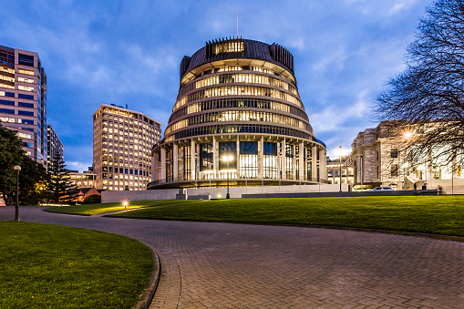

Wellington
Wellington is the capital city of New Zealand, located at the southern tip of the North Island. It is known for its picturesque harbor, vibrant arts scene, and diverse cultural attractions. Wellington is renowned for its rich cultural heritage and vibrant arts scene. It is home to numerous museums, art galleries, theaters, and performance venues, including the Museum of New Zealand Te Papa Tongarewa, which is the national museum and a significant cultural landmark. The city boasts a dynamic culinary scene, with a wide array of restaurants, cafes, and eateries offering diverse cuisines. The bustling food markets and specialty stores contribute to the city's reputation as a food lover's paradise. Wellington is also known for its connection to the film industry, particularly due to its association with renowned filmmaker Peter Jackson and the filming of "The Lord of the Rings" and "The Hobbit" trilogies. The Weta Workshop, responsible for the film's special effects, is located in Wellington and offers guided tours for visitors.